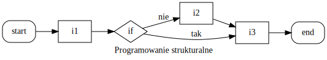

Sterowanie: spacja + shift-spacja || page down + page up || strzałki || esc
FalseNone(0, 0.0, 0j)'', (), [] lub mapowanie {}| Operacja | Wynik |
|---|---|
| x or y | jeśli x jest fałszem, to y, inaczej x |
| x and y | jeśli x jest fałszem, to x, inaczej y |
| not x | jeśli x jest fałszem, to True, inaczej False |
orprint("0 or 0 -> " + str(0 or 0))
print("1 or 0 -> " + str(1 or 0))
print("0 or 1 -> " + str(0 or 1))
print("1 or 1 -> " + str(1 or 1))0 or 0 -> 0
1 or 0 -> 1
0 or 1 -> 1
1 or 1 -> 1andprint("0 and 0 -> " + str(0 and 0))
print("1 and 0 -> " + str(1 and 0))
print("0 and 1 -> " + str(0 and 1))
print("1 and 1 -> " + str(1 and 1))0 or 0 -> 0
1 or 0 -> 0
0 or 1 -> 0
1 or 1 -> 1notnot TrueFalsenot FalseTruex = 1 # zmiennej x przypisz wartość 1
y = 2 # zmiennej y przypisz wartość 2
False = 3 # zmiennej False przypusz wartość 3False = 3 # zmiennej False przypusz wartość 3
SyntaxError: can't assign to keywordimport keyword
print(keyword.kwlist) # lista słów kluczowych w Pythonie['False', 'None', 'True', 'and', 'as', 'assert', 'break', 'class', 'continue', 'def', 'del', 'elif', 'else', 'except', 'finally', 'for', 'from', 'global', 'if', 'import', 'in', 'is', 'lambda', 'nonlocal', 'not', 'or', 'pass', 'raise', 'return', 'try', 'while', 'with', 'yield']_| == | równe |
| != | różne |
| < | mniejsze |
| > | większe |
| <= | mniejsze lub równe |
| >= | większe lub równe |
| is | ten sam identyfikator |
| is not | inny identyfikator |
1 > 0 # większy niżTrue"Prowadzący" > "Student" # znak po znakuFalse"prowadzący" > "Student" # wielkość ma znaczenieTrue"prowadzący" > "2 studentów" # litera > cyfraTruew Pythonie możliwe jest:
trzy struktury sterujące:

int x = 0;
{
int y = 10; // zmienna lokalna
x = y + 2;
}
cout << x; // OK
cout << y; // ERROR: nieznana zmienna// przykład C++
double bezpieczne_dzielenie (int a, int b)
{
if (b != 0) return a / b;
else return 0;
}# przykład Python
def bezpieczne_dzielenie (a, b):
if b != 0:
return a / b
else:
return 0ifif warunek: # zwróć uwagę na :
instrukcja1
instrukcja2
...przykład:
if 2 > 1:
print("2 jest większe od 1")2 jest większe od 1if elseif warunek:
instrukcja1
instrukcja2
...
else:
instrukcja3
instrukcja4
...przykład:
if 2 > 3:
print("2 jest większe od 3")
else:
print("2 nie jest większe od 3")2 nie jest większe od 3if elif elseif warunek1:
instrukcja1
instrukcja2
...
elif warunek2:
instrukcja3
instrukcja4
...
.
.
.
else:
instrukcja5
instrukcja6if elif else - przykładif 2 > 3:
print("2 jest większe od 3")
elif 2 == 3:
print("2 jest równe 3")
else:
print("2 jest mniejsze od 3")2 jest mniejsze od 3print("Podaj liczbę:", end=' ')
raw_x = input() # pobierz stringa z wejścia standardowego
x = eval(raw_x) # zinterpretuj jako wyrażenie Pythona
# x % 2 zwraca resztę z dzielenia
# każda wartość != 0 jest traktowana jako prawda
if x % 2:
print("Podana liczba jest nieparzysta.")
else:
print("Podana liczba jest parzysta.")Podaj liczbę: 2
Podana liczba jest parzysta.input vs raw_inputw Pythonie 2
raw_input pobiera “surowego” stringainput dodatkowo go parsujew Pythonie 3
input pobiera “surowego” stringaeval(input) odtworzy zachowanie input z Pythona 2input i evalhelp(input)Help on method raw_input in module ipykernel.kernelbase:
raw_input(prompt='') method of ipykernel.ipkernel.IPythonKernel instance
Forward raw_input to frontends
Raises
------
StdinNotImplentedError if active frontend doesn't support stdin.type(input()) # pobiera wejście jako string2
strinput i evalhelp(eval)Help on built-in function eval in module builtins:
eval(source, globals=None, locals=None, /)
Evaluate the given source in the context of globals and locals.
The source may be a string representing a Python expression
or a code object as returned by compile().
The globals must be a dictionary and locals can be any mapping,
defaulting to the current globals and locals.
If only globals is given, locals defaults to it.type(eval(input())) # parsuje wejście jako komendę2
inthelp(iter)Help on built-in function iter in module builtins:
iter(...)
iter(iterable) -> iterator
iter(callable, sentinel) -> iterator
Get an iterator from an object. In the first form, the argument must
supply its own iterator, or be a sequence.
In the second form, the callable is called until it returns the sentinel.iter(iterable)lista = ['a', 'b', 'c', 'd'] # zwykła lista
it = iter(lista) # iterator listy (wskazuje na początek)
print(next(it)) # zwraca 1 element i przesuwa "wskaźnik"
print(next(it)) # zwraca 2 element i przesuwa "wskaźnik"
print(next(it)) # zwraca 3 element i przesuwa "wskaźnik"
print(next(it)) # zwraca 4 element i przesuwa "wskaźnik"a
b
c
diter(callable, sentinel)i = 0
# funkcje omówimy w przyszłości
def funkcja():
"""Z każdym wywołaniem zwraca kolejną liczbę całkowitą."""
global i # użyj globalnej zmiennej i
i += 1 # zwiększ
return i # i zwróć
# kolejne wartości zwracane przez funkcję
# iterowane aż zwróci 4
it = iter(funkcja, 4)
print(next(it))
print(next(it))
print(next(it))
# print(next(it)) # StopIteration1
2
3for// przykład w C++
for (unsigned int i = 0; i < N; i++)
{
// wykonaj coś na i-tym elemencie
}
for (auto it = v.begin(); it != v.end(); ++it)
{
// wykonaj coś na iteratorze it
}for po liścielista = ['a', 'b', 'c', 'd']
for element in lista: # pętla po liście, w każdym kroku
print(element) # element zmienia swoją wartośća
b
c
dfor “krok po kroku”lista = ['a', 'b', 'c', 'd']
it = iter(lista)
element = next(it)
print(element)
element = next(it)
print(element)
element = next(it)
print(element)
element = next(it)
print(element)a
b
c
dfor i nextlista = ['a', 'b', 'c', 'd']
it = iter(lista)
# pętla po iteratorze it
# wewnątrz "ręcznie" wywołujemy next()
for i in it:
print("i = " + str(i))
print("next(it) = " + str(next(it)))i = a # pierwszy obieg pętli, pierwszy print
next(it) = b # pierwszy obieg pętli, drugi print, iterator przesunięty
i = c # w drugim obiegu pętli iterator wskazuje już na trzeci element
next(it) = d # pętla po czterech elementach kończy się w dwóch obiegachfor po wycinkachlista = ['a', 'b', 'c', 'd']
for element in lista[-2:]:
print(element, end=' ')c d for i in range(10)[::2]:
print(i, end=' ')0 2 4 6 8 for po krotcekrotka = ('a', 'b', 'c', 'd')
for element in krotka: # pętla po krotce
print(element) # działa jak po liściea
b
c
dfor po stringuslowo = "Python"
for litera in slowo: # pętla po stringu
print(litera) # iteruje po literachP
y
t
h
o
nfor po rangefor liczba in range(5): # pętla po range
print(liczba) # "odpowiednik" for (i = 0; ...)0
1
2
3
4# sekwencja sekwencji
slowa = ['Ala', 'Ma', 'Kota']
for slowo in slowa: # pętla po słowach
for litera in slowo: # pętla po literach w kolejnych słowach
print(litera, end=' ')
print()A l a
M a
K o t a whilewhile warunek:
instrukcjeprzykład:
i = 0
while i < 5: # wykonuj dopóki i < 5
i += 1 # bez tego mamy nieskończoną pętlę
print(i, end=' ')1 2 3 4 5 while - przykładif możemy sprawdzić, czy podano takie dane, jakich oczekujemyn = input("Podaj liczbę całkowitą: ")
if n.isdigit():
print("Twoja liczba to:", n)
else:
print(n, "nie jest liczbą całkowitą...")Podaj liczbę całkowitą: 23
Twoja liczba to: 23while - przykładwhile możemy wymusić, aby podano takie dane, jakich oczekujemyn = input("Podaj liczbę całkowitą: ")
while not n.isdigit():
n = input("Spróbuj jeszcze raz: ")
print("Twoja liczba to:", n)Podaj liczbę całkowitą: a
Spróbuj jeszcze raz: 2
Twoja liczba to: 2while - nieskończona pętlawhile należy zachować ostrożność - łatwo stworzyć nieskończoną pętlęi = 1
while i != 10:
i += 2break - przerwij pętlęcontinue - przerwij obecną iteracjępass - nie rób nicelse - wykonuj jeśli pętla zakończyła się inaczej niż breakbreakfor i in range(10): # drukuj liczby z range(10)
print(i, end=' ')
if i > 5: # przerwij pętlę jeśli i > 5
break0 1 2 3 4 5 6 i = 0
while True: # wykonuj w niekończoność
print(i, end=' ')
if i > 5: # przerwij pętlę jeśli i > 5
break
i += 1 # bez tego byłaby nieskończona pętla zer 0 1 2 3 4 5 6 continuefor i in range(10):
if i % 2: # jeśli i jest nieparzyste
continue # pomiń
print(i, end=' ')0 2 4 6 8 znowu uwaga na nieskończone while
i = 0
# pętla wydrukuje 0 i utknie na 1
while i < 10:
if i % 2:
continue
print(i, end=' ')
i += 1passfor i in range(10):
if i % 2: # jeśli i jest nieparzyste
pass # nie rób nic
else: # w innej sytuacji drukuj
print(i, end=' ')0 2 4 6 8 i = 0
# w praktyce napisalibyśmy: if not i % 2: print...
while i < 10:
if i % 2:
pass
else:
print(i, end=' ')
i += 10 2 4 6 8 elsefor i in range(10):
if i < 5: # drukuj mniejsze od 5
print(i, end=' ')
else: # dla pozosyałych nie rób nic
pass
else: # wykonaj po zakończeniu pętli
print("Koniec pętli.")0 1 2 3 4 Koniec pętli.for i in range(10):
if i < 5: # drukuj mniejsze od 5
print(i, end=' ')
else: # przerwij pętlę
break
else: # pętla nie doszła do końca przez break
print("Koniec pętli.")0 1 2 3 4for element in (1, 2, 3, 4.0, "python"):
# jeśli string to drukuj litera po literze
if type(element) is str:
for litera in element:
print(litera)
# jeśli liczba całkowita
# to drukuj wszystkie liczby naturalne <= x
elif type(element) is int:
while element > 0:
print(element)
element -= 1
# w przeciwnym wypadku nie rób nic
else:
continue
print()